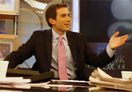

November
Andrew Ross Sorkin
When the global financial system teetered on the edge of collapse in 2008, Andrew Ross Sorkin had an all-access pass to the backrooms where history was being made. His definitive account of those terrifying days, Too Big to Fail: How Wall Street and Washington Fought to Save the Financial System — and Themselves, won the Gerald Loeb Award for Best Business Book, spent over six months on the New York Times bestseller list, and was adapted into an HBO film that earned 11 Emmy nominations. In his lectures, Sorkin draws on his unparalleled access to offer audiences an insider's view of financial crises, market dynamics, and the forces that continue to shape the global economy.
Andrew Ross Sorkin is co-anchor of CNBC's Squawk Box and the founder and editor-at-large of DealBook, the influential financial news platform of The New York Times. A Cornell University graduate, he began his career at The New York Times in 1995 — while still in high school — an exceptional start that set the tone for a career defined by breaking major financial stories and gaining remarkable access to the most powerful figures on Wall Street and in Washington.
Beyond journalism, Sorkin co-created the acclaimed Showtime drama series Billions, which draws on his deep understanding of hedge funds and Wall Street culture to bring complex financial power dynamics to a mainstream audience. He has provided authoritative on-the-ground coverage of transformative events including the collapses of Bear Stearns and Lehman Brothers, and major mergers and acquisitions that have reshaped entire industries.
An authority on the intersection of finance, business, and public policy, Sorkin offers audiences rare perspective on how capital markets function under pressure, what the 2008 crisis taught us about systemic risk, and what the next generation of financial challenges may look like. His conversations with CEOs, regulators, and heads of state place him at the center of every major economic debate of our time.